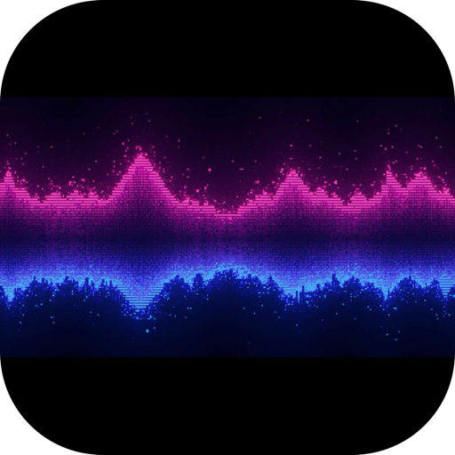

SoundPaper
A live, audio-reactive desktop wallpaper for macOS.
Puddles, oceans, nebulae, and a black hole that all move to your music.
Installation
- Open the downloaded
SoundPaper.dmg. - Drag SoundPaper into the Applications shortcut in the same window.
- Open it from Applications (see below — macOS will warn you first since this isn't a notarized App Store app).
- When prompted, grant Screen Recording permission in System Settings → Privacy & Security. This is what lets the app listen to your music; relaunch the app afterward.
- Open the app's menu bar controls to pick your audio source (Spotify or Apple Music) and a visual style.
macOS blocks it the first time — here's how to open it anyway
This app is signed but not notarized through Apple, so Gatekeeper flags it as coming from an unidentified developer. This is expected and safe to bypass.
macOS Sonoma / Sequoia (14 & 15):
- Try to open the app once (it will be blocked).
- Go to System Settings → Privacy & Security, scroll down to the security message about SoundPaper, and click Open Anyway.
- Confirm one more time when it relaunches.
macOS Ventura and earlier:
- Right-click (or Control-click) the app and choose Open.
- Click Open in the dialog that appears.